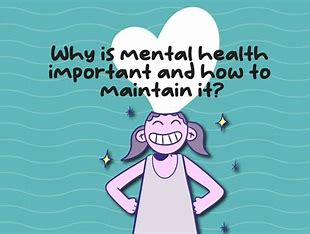
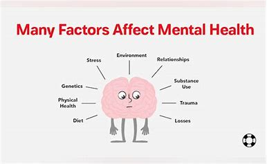
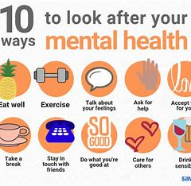

Importance of Exercise
Physical Health Benefits
- Cardiovascular Health: Regular exercise reduces high blood pressure, heart diseases, and stroke by strengthening the heart and improving blood circulation.
- Weight Management: It improves metabolism, burns more calories, and sustains lean muscle mass; hence, it controls body weight.
- Muscle and Bone Strengthening: Exercise continues to develop firm muscles and bones. It redraws one to lesser risks of conditions such as sarcopenia and osteoporosis. Mental Health Benefits.
Mental Health Benefits
Good mental health is crucial for emotional well-being and cognitive function.
- Stress Reduction: Exercise increases the amount of naturally occurring mood enhancers, such as endorphins, and decreases the levels of stress chemicals.
- Anxiety and Depression: Exercising regularly helps in reducing the symptoms of anxiety and depression, hence improving the general mental health.
- Cognitive Function: Exercise overwhelmingly enhances memory, attention, and problem-solving capabilities of the brain.
Long-term Health Benefits
The long-term benefits of maintaining good health are substantial and far-reaching.
- Chronic Disease Prevention: Regular physical activity brings down the risk for chronic illness, including diabetes, cancer, metabolic syndrome, and more.
- Longevity: Regular physical exercise could prolong life, and may also promote better function across the lifespan.
- Healthy Aging: Physical activity lowers the falls, improves mobility and balance, and allows older adults to maintain their functional independence.
Discuss the advantages and benefits of maintaining good health, such as improved energy levels, better immune function, and overall well-being.
Mental Health and Well-being
What is Mental Health?
Mental health is described as the state of our emotional, psychological, and social well-being. It affects our everyday thought processes, emotions, and actions. Our mental health also determines how well we are equipped to cope with stress, be in a relationship with others, and make decisions. At every stage of life from childhood and adolescence to maturity it assumes a very significant dimension of general health and well-being.
Importance of Mental Health
- Quality of Life:Good mental health makes it possible for mankind to sustain fruitful lives and enjoy satisfying relationships.
- Physical Health: Mental and physical health are closely related. Poor mental health can cause several problems related to physical health, such as heart disease, and vice versa.
- Productivity and Performance: With sound mental health, one can work or study well thus be a productive worker or member of society.
Factors Influencing Mental Health
Biological Factors
- Genetics:Mental health problems can be traced to a family history.
- Physical Health Conditions: Mental health may be affected because of chronic medical conditions.
Life Experiences
- Trauma and Abuse:Being in or witnessing a painful situation.
- Chronic Stress: Stress continuing because of tensions in relationships, at work, or with money.
- Significant Life Changes: This includes things like moving, getting divorced, or losing someone you love. Environmental and Social Factors
Social and Environmental Factors
- Relationships: How people feel about their relationships with friends, family and community.
- Socio-economic Status:Living and working conditions; access to resources and basic needs; and Economic Security.
- Cultural Influences:The cultural factors include also those attitudes, customs, and beliefs that do affect mental health.
Maintaining Mental Health
- Healthy Lifestyle:A healthy lifestyle includes regular exercise, a well-balanced diet, enough sleep, and plenty of water.
- Mindfulness and Relaxation: Activities that promote mindfulness and relaxation include yoga, meditation, and deep breathing.
- Social Connections: Social Connections: Establishing and preserving bonds with people who are helpful.
- Seeking Professional Help:Getting Professional Help: When necessary, seeking therapy, counseling, and medical attention.
- Self-care:Self-care is doing things that make you happy, calm, and fulfilled.
Social Health Benefits
Good health also positively impacts social interactions and relationships.